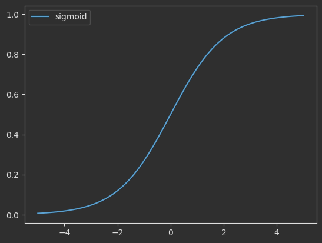
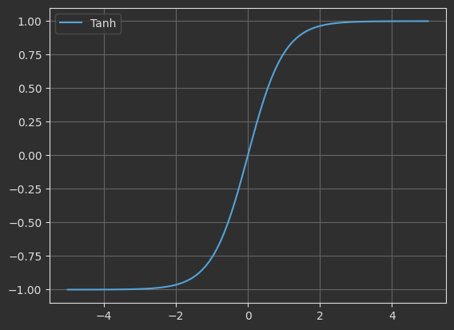
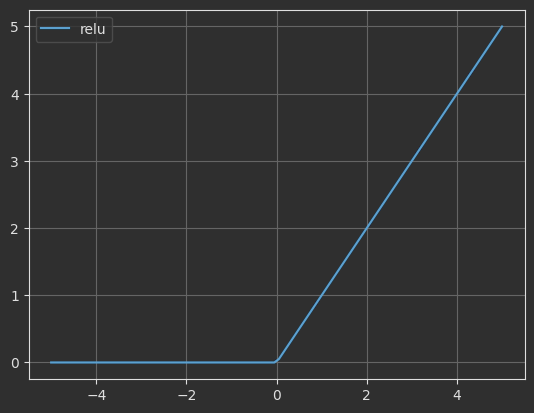
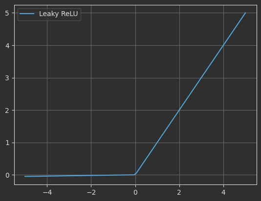
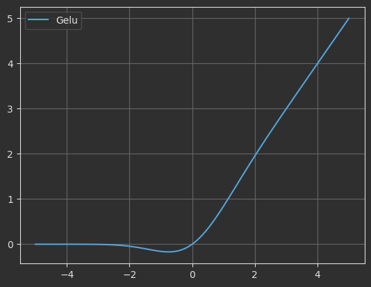

激活函数¶
激活函数（Activation Function）是深度学习中非线性变换的核心机制，用于控制神经网络中每个神经元的输出。
一、Sigmoid¶
Sigmoid函数是神经网络中常用的激活函数之一，尤其在二分类问题的输出层中广泛应用。下面我将从多个方面详细介绍Sigmoid函数。
Sigmoid函数（又称Logistic函数）是一种S型曲线函数，它将任意实数输入映射到(0,1)区间。在神经网络中，它曾经是最常用的激活函数之一，特别适合需要输出概率的场景。

1.1 数学定义¶
Sigmoid函数的数学表达式为：\(f(x) = \frac{1}{1 + e^{-x}}\)
Info
- e是自然对数的底数(约2.71828)
- x是函数的输入值
1.2 优缺点¶
优点：
- 概率解释：输出值在0-1之间，天然适合表示概率
- 平滑性：处处可导，便于梯度下降优化
- 单调性：保证误差曲面不会出现局部极小值
- 历史地位：早期神经网络的基础激活函数
缺点：
- 梯度消失：当|x|较大时梯度接近0，导致深层网络训练困难
- 非零中心：输出全为正数，影响梯度更新效率
- 计算成本：包含指数运算，计算量较大
- 敏感区间窄：仅在输入接近0时敏感，两端饱和
1.3 实现代码¶
import torch
import torch.nn.functional as F
import matplotlib.pyplot as plt
x = torch.linspace(-5,5,100)
y = F.sigmoid(x)
plt.plot(x.numpy(),y.numpy(),label="sigmoid")
# plt.grid(True)
plt.legend()
plt.show()
二、Tanh¶
Tanh（Hyperbolic Tangent，双曲正切）函数是一种S型曲线激活函数，它将任意实数输入映射到(-1,1)区间。Tanh可以看作Sigmoid函数的缩放平移版本，在神经网络中常用于隐藏层。

2.1 数学公式¶
\[
f(x) = \tanh(x)
\]
2.2 优缺点¶
优点：
- 零中心化：输出均值为0，使下一层学习更高效
- 梯度更强：相比Sigmoid，梯度更大（最大梯度为1）
- 平滑性：处处可导，便于梯度下降优化
- 单调性：保证误差曲面不会出现局部极小值
缺点：
- 梯度消失：当|x|较大时梯度接近0，导致深层网络训练困难
- 计算成本：包含指数运算，计算量较大
- 敏感区间窄：仅在输入接近0时敏感，两端饱和
2.3 代码实现¶
import torch
import torch.nn.functional as F
import matplotlib.pyplot as plt
x = torch.linspace(-5,5,100)
y = F.tanh(x)
plt.plot(x.numpy(),y.numpy(),label="Tanh")
plt.grid(True)
plt.legend()
plt.show()
三、ReLU¶
ReLU（修正线性单元）是目前深度学习中最常用的激活函数，定义为：\(f(x) = max(0, x)\) 即对于输入x，当x>0时输出x，否则输出0。

3.1 数学公式¶
\[
f(x) = \max(0, x)
\]
3.2 优缺点¶
优点：
- 计算高效：
- 只需简单的max操作，计算速度远快于Sigmoid/Tanh的指数运算
- 在大型网络和深层架构中优势明显
- 缓解梯度消失：
- 正区间的梯度恒为1，有效解决深层网络的梯度消失问题
- 使网络可以训练得更深（如ResNet超过100层）
- 稀疏激活：
- 负输入完全被抑制，产生真正的零激活
- 模拟生物神经元的"全有或全无"特性
- 自动实现特征选择，提高模型泛化能力
- 收敛速度快：
- 相比Sigmoid/Tanh，ReLU能使网络更快收敛
- 实验表明通常快6倍左右
缺点：
- 神经元死亡问题（Dying ReLU）：
- 当输入始终为负时，梯度恒为0，神经元永久失效
- 学习率设置过高时尤其明显
- 非零中心性：
- 输出始终≥0，不是以0为中心
- 可能影响梯度下降效率
- 无负值输出：
- 完全抑制负值信息，可能丢失重要特征
- 无界输出：
- 正区间理论上无上限
- 可能导致某些情况下激活值过大
3.3 代码实现¶
import torch
import torch.nn.functional as F
import matplotlib.pyplot as plt
x = torch.linspace(-5,5,100)
y = F.relu(x)
plt.plot(x.numpy(),y.numpy(),label="relu")
plt.grid(True)
plt.legend()
plt.show()
四、Leaky ReLU¶
Leaky ReLU是ReLU激活函数的改进版本，旨在解决"神经元死亡"问题。

4.1 数学公式¶
\[
f(x) = \begin{cases} x, & x>0 \\ \alpha x, & x \le 0 \end{cases}
(-∞, ∞)
\]
4.2 核心特点¶
- 负区间斜率：保留负值区域的小斜率（α），而不是完全置零
- 参数设置：α通常设为0.01，也可作为可学习参数（此时称为PReLU）
- 计算效率：依然保持较高的计算效率，只比标准ReLU稍复杂
4.3 优缺点¶
优点：
- 解决神经元死亡问题：
- 负区间仍有微小梯度（α），使神经元有机会恢复
- 实验显示可减少约30%的"死亡神经元"
- 保留ReLU优势：
- 正区间保持线性特性，避免梯度消失
- 计算仍然高效，适合深层网络
- 稀疏激活保留：
- 虽然负值不完全归零，但仍保持高度稀疏性
- 维持了ReLU的特征选择能力
- 实践表现优异：
- 在图像分类等任务中常优于标准ReLU
- 特别适合噪声较多的数据集
缺点：
- 效果依赖超参数：
- α值需要谨慎选择（太小无效，太大会丧失ReLU特性）
- 常用α=0.01，但并非所有场景最优
- 理论保证不足：
- 不像SELU有数学上的归一化证明
- 性能提升缺乏严格理论支持
- 非零中心问题：
- 输出均值仍不为零，影响梯度更新效率
- 此问题在ELU/SELU中得到更好解决 4.计算稍复杂：
- 比标准ReLU多一次乘法运算
- 在极低功耗设备上可能影响效率
4.4 代码实现¶
import torch
import torch.nn.functional as F
import matplotlib.pyplot as plt
x = torch.linspace(-5,5,100)
y = F.leaky_relu(x)
plt.plot(x.numpy(),y.numpy(),label="Leaky ReLU")
plt.grid(True)
plt.legend()
plt.show()
五、GELU¶
GELU（高斯误差线性单元）是一种近年来提出的高性能激活函数，被广泛应用于Transformer架构（如BERT、GPT等）。它将神经元的非线性与随机正则化思想相结合，通过高斯分布的累积分布函数对输入进行变换。

5.1 数学公式¶
\[
GELU(x) = xΦ(x) = x·1/2[1 + erf(x/√2)]
\]
Info
-
Φ(x)是标准高斯分布的累积分布函数
-
erf是误差函数：\(erf(x) = 2/√π ∫₀ˣ e⁻ᵗ² dt\)
5.2 核心特点¶
- 概率视角：将输入乘以其"被保留的概率"Φ(x)
- 平滑过渡：相比ReLU的硬边界，提供平滑的非线性过渡
- 自适应性：根据输入幅度自动调整激活强度
- 双向激活：同时处理正负输入（不同于ReLU的单向激活）
5.3 优缺点¶
优点：
- 卓越的模型性能：
- 在自然语言处理任务中表现显著优于ReLU
- 在BERT、GPT等SOTA模型中成为标准配置
- 数学理论基础强：
- 基于随机正则化的概率解释（Dropout的确定性版本）
- 与神经网络的随机正则化有理论联系
- 平滑梯度流：
- 处处可导，没有ReLU的硬截断
- 缓解梯度消失/爆炸问题
- 自适应非线性：
- 自动平衡线性和非线性行为
- 大输入时接近线性，小输入时表现强非线性
- 零中心性：
- 输出均值为零，有利于网络训练动态平衡
缺点：
- 计算复杂度高：
- 涉及特殊函数（erf）计算
- 比ReLU计算成本高约3-5倍
- 实现不一致性：
- 不同框架使用不同近似公式
- 可能导致跨平台结果差异
- 小数据集过拟合：
- 在小型数据集上可能表现不如ReLU
- 需要足够数据量才能体现优势
- 理论理解门槛高：
- 概率解释较抽象，不如ReLU直观
- 超参数调节缺乏明确指导